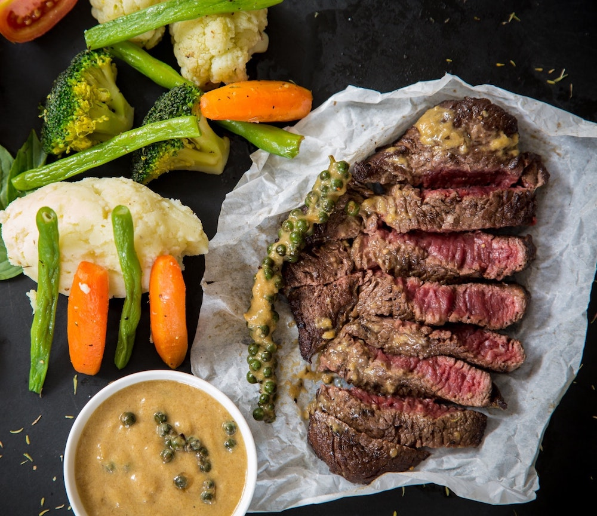
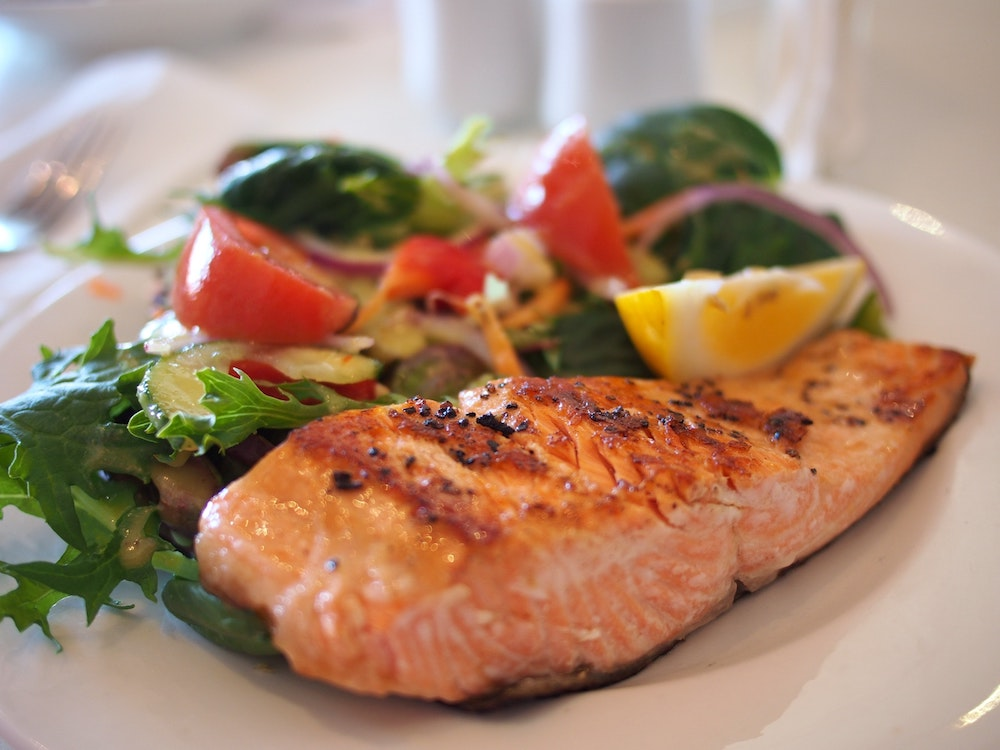
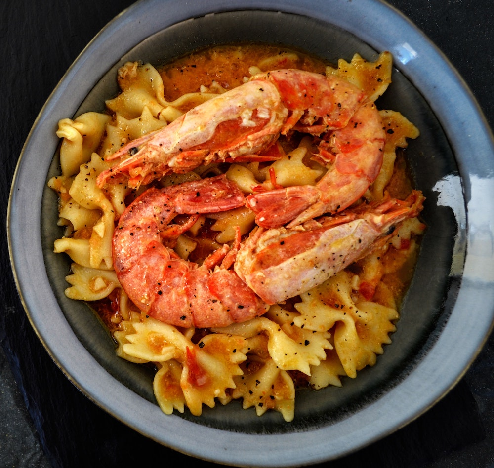

Impasto Con Guarnizione
$$
Italian, pizza, pasta
Impasto Con Guarnizione is an authentic Italian restaurant.
- The food: Impasto Con Guarnizione serves mainly pizza, but select pasta dishes are available. Local desserts are also available for low prices.
- When to go: The restaurant is popular every afternoon and usually packed on weekends. With seating for up to 90 people available there is still rarely a need to book ahead.

Carne Troppo Cotta
$$$$
Steakhouse
Carne Troppo Cotta specializes in high quality beef.
- The food: The 35-day aged rib steak is signature item at Carne Troppo Cotta, with other dishes including brisket and sirloin steaks. It is the only steak house on Sardinia to grill over charcoal.
- When to go: With the limited number of tables, serving only 25 people at any on time, is is a good idea to book ahead when attending Carne Troppo Cotta.

Frutti di Congelati
$$$
Italian, seafood
Frutti di Congelati is a mediterranean seafood restaurant.
- The food: Frutti di Congelati serves a variety of mediterranean seafood, including salt-roasted shrimp and sea urchin linguine. Its roots date back to the early 1960s, with a local family opening a restaurant to sell their fresh seafood. The restaurant is still kept in the family and prides itself over local and fresh ingredients.
- When to go: Tables are usually available without reserving ahead, but short waiting times may occur during busy times during the weekends.

Aragosta Bollita Viva
$$$$
Italian, seafood, pasta
Aragosta Bollita Viva is an Italian seafood restaurant
- The food: Aragosta Bollita Viva is a high-end restaurant with a focus on local shellfood. Lobsters are served roasted, steamed, grilled or stuffed, and with is delicious fresh pasta you won't be dissapointed.
- When to go: Aragosta Bollite Viva is a popular lunch destination on weekends and reservations are usually needed if that is your plan.